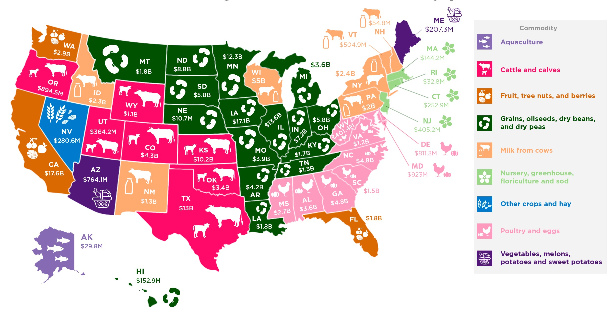
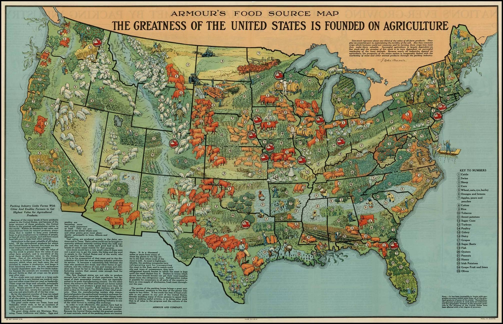

The Information gathered from the study is classified into numerous classifications dependent on factors like Typology, Economy, Deals, age, and so on The classifications are sub-characterized into numerous divisions. Every classification is given a short ID with a depiction expressing the capacity of the Class. For example, Monetary Class (Sal) is isolated into classes like $1,000,000 and the sky is the limit from there; $500,000 to $999,999 and so on Along these lines, different classifications have their sub-classes to additionally characterize the information. Classifications are meta labels that give setting to the information. The Information gathered from the overview is ordered into various classifications dependent on factors like Typology, Economy, Deals, age, and so forth The classifications are sub-ordered into numerous divisions. Every class is given a short ID with a depiction expressing the capacity of the Classification. For example, Financial Class (Sal) is partitioned into classes like $1,000,000 and the sky is the limit from there; $500,000 to $999,999 etc.Also, for Ranch Asset District, the information is ordered into classes like Heartland, Northern Bow, and so on Likewise, different classes have their subclasses to additionally characterize the information.
| Category Sequence | Category ID | Category Name | Category Description |
|---|---|---|---|
| 1 | grp | collapsed farm topology | Data shown here is classified into 3 categories(typologies) of farm. The topology is based on the occupation of principal operator and the gross cash farm income of the farming operation |
| 2 | age | operator age | Data shown here is classified into 3 categories(typologies) of farm. The topology is based on the occupation of principal operator and the gross cash farm income of the farming operation |
| 3 | sal | economic class | The topology is based on the occupation of principal operator and the gross cash farm income of the farming operation, Data shown here is classified into 3 categories(typologies) of farm. |
Out of all the above classifications, Homestead Asset Locales, Ranch Creation Areas, USDA Land Asset Districts, NASS Harvest Announcing Regions are utilized to order areas in the US
This arrangement of guides helps information clients envision and better comprehend the topographical extension and level of conglomeration by which numerous ARMS information are summed up. For instance, the ARMS web information apparatus presents ranch monetary appraisals amassed to Cultivate Asset Districts, which don't follow State limits. Guides beneath show the various ways information are frequently summed up.
U.S. Farm Resource Regions:
Ranch asset areas are characterized utilizing ranch creation locales, land asset locales, crop detailing regions, furthermore, ranch qualities. The areas are assigned at the region level and in this manner don't for the most part follow State limits.
USDA Land Resource Regions:
In constructing the ERS production regions, analysts identified where areas with similar types of farms intersected with areas of similar physiographic, soil, and climatic traits, as reflected in USDA's Land Resource Regions.
